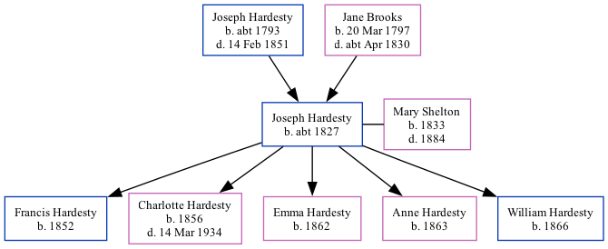

Joseph Hardesty c1827 -
[ Home ] | [ Surnames Index ] | [ Family History ]The child of Joseph Hardesty and Jane Brooks, was born in Indiana, USA c. 18271 and had 5 children with Mary Ann Shelton: Francis M, Charlotte Jane, Emma, Anne and William. On 1 July 1863, he was living in Weaver, Newton, Indiana1.
Parents
- Joseph Paul was born c. 1793
- Jane was born on Mar 20, 1797
Children
- Francis M was born in 1852
- Charlotte Jane was born in 1856
- Emma was born in 1862
- Anne was born in 1863
- William was born in 1866
Citations
- U.S., Civil War Draft Registrations Records, 1863-1865 Ancestry.com Operations, Inc. (Age on 1 July 1863: 32; Marital Status: Unmarried)
Family Tree
Data (GEDCOM) maintained by Jay Weston Hannah, Omaha, Nebraska, USA.
Website generated by ged2site. Last updated on Jun 18, 2024.